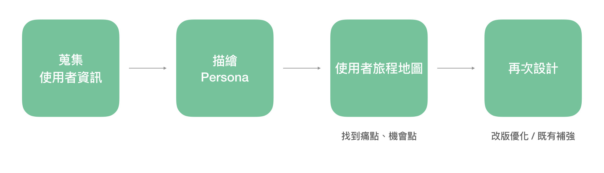
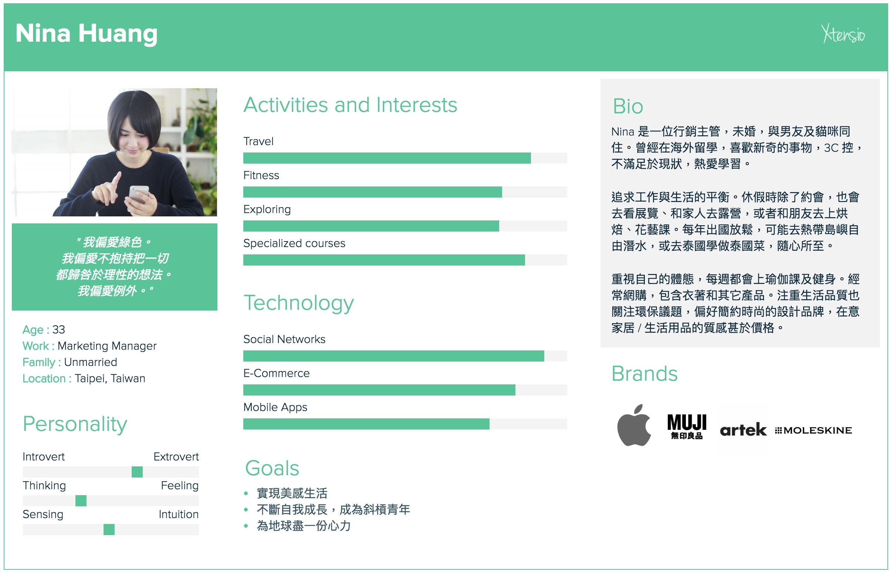
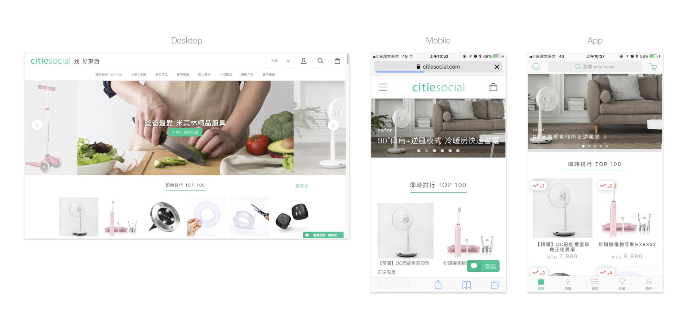

「citiesocial 找好東西」首頁改版優化
* 非官方設計，無合作關係及實作上線，僅為個人參加該公司面試時之命題與設計提案。
目標
- 增進轉換率與平均瀏覽頁數
- 增加主動造訪
- 讓使用者更容易找到所需的商品
- 讓使用者了解網站核心的商品類別
設計方法
人物誌 Persona
根據 citiesocial 提供的使用者資訊，建立人物誌（Persona)
使用者旅程圖 User Journey Map
- 情境任務：使用者 Nina 進到 citiesocial 的首頁遊逛，想要找到並購買一個屬意的玻璃水瓶
- 使用者旅程
發現首頁問題點
網站現況
- 閃購商品露出數量太多，易造成使用者無法聚焦
- 限時 / 折扣的提示不夠明顯
- 在首頁內容中商品分佈較分散，並無將核心類別群組化
- 商品圖缺乏一致性，不容易查看到目標商品
- 促購訊息及引導較低調，無明確的 CTA
首頁優化設計方案
[新增]
- 形象大圖 / 影片輪播，強調核心的商品類別
向下滾動時，選單固定置頂在上方 - 強調搜尋，符合「找好東西」的品牌意旨
- 熱門推薦，強化核心類別及最新商品
- 在單一商品增加收藏功能，提升購買轉換率，並有助於蒐集使用者的喜好，進一步推薦合適的商品
[優化]
- 精選限時閃購商品，在視覺上強調折扣與時限，使其聚焦